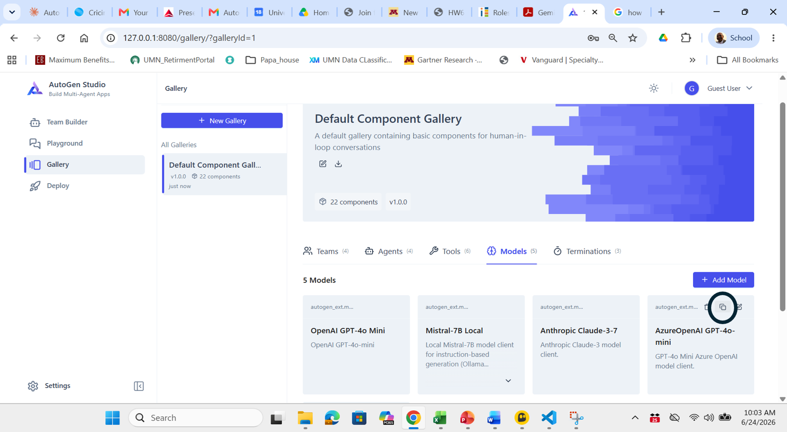
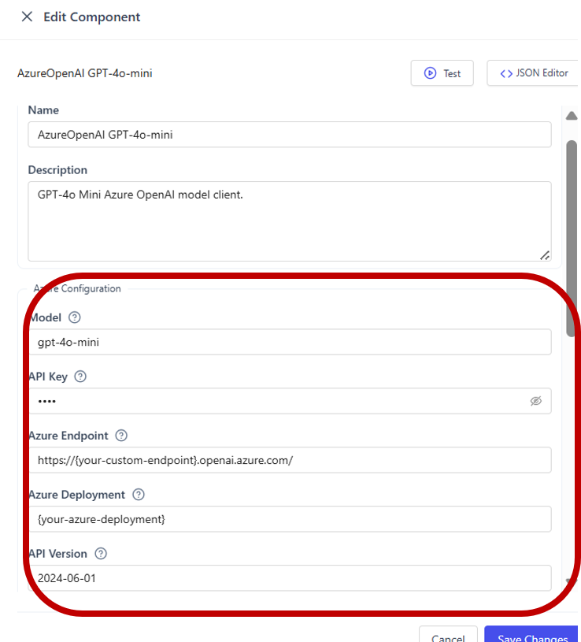

In this tutorial you will install AutoGen Studio — Microsoft's no-code web interface for building multi-agent systems — launch it from VS Code's terminal, connect it to your Azure AI Foundry endpoint, and build two agent teams using drag-and-drop: the WebSurfer Team and the Deep Research Team.
Every terminal command has a macOS and Windows PowerShell tab. All Studio steps are the same on both platforms — you just use your browser.
AutoGen Studio
No-code web UI — drag agents onto a canvas, connect them, run tasks
Azure AI Foundry
Your GPT-4o deployment, configured once in the Studio model library
WebSurfer Team
MultimodalWebSurfer + AssistantAgent browsing the live web
Deep Research Team
Four-agent SelectorGroupChat for structured research reports
JSON Export
Every team you build can be exported as runnable Python code
Install AutoGen Studio into your hw6155 environment
There are four sub-steps here that must happen in order: verify Python → create the virtual environment → activate it → install packages. You cannot skip or reorder them.
python3 --version
# Expected: Python 3.10.x or higherpython --version
# Expected: Python 3.10.x or higherpython, not python3. On Windows, python3 often returns "Python was not found" even when Python is correctly installed, because the standard Windows installer only registers the python command. Every command in this tutorial's PowerShell tab already uses python for this reason — if you're following along and adapting a macOS command yourself, remember to drop the 3 on Windows.Activate.ps1 does not exist until this step runs. You only need to do this once per project.
cd hw6155
python3 -m venv .venv
# Creates the .venv folder with its own Python and pipSet-Location hw6155 python -m venv .venv # Creates the .venv folder with its own Python and pip
.venv folder inside hw6155. On Windows it contains .venv\Scripts\Activate.ps1. On macOS it contains .venv/bin/activate. Nothing is installed yet — the next step activates it.
.venv instead of the system-wide Python. You need to do this every time you open a new terminal window.
source .venv/bin/activate
# Prompt changes to: (.venv) $.venv\Scripts\Activate.ps1
# Prompt changes to: (.venv) PS C:\...>pip install commands will install into the isolated environment, not globally.
# Install all packages together so pip picks compatible versions pip install \ "autogenstudio==0.4.2.2" \ "autogen-agentchat>=0.4.9.2,<0.6" \ "autogen-core>=0.4.9.2,<0.6" \ "autogen-ext[web-surfer,magentic-one,openai,azure]>=0.4.2,<0.6" # Install the Playwright robot browser (see note below) playwright install --with-deps chromium
# Install all packages together so pip picks compatible versions pip install ` "autogenstudio==0.4.2.2" ` "autogen-agentchat>=0.4.9.2,<0.6" ` "autogen-core>=0.4.9.2,<0.6" ` "autogen-ext[web-surfer,magentic-one,openai,azure]>=0.4.2,<0.6" # Install the Playwright robot browser (see note below) playwright install --with-deps chromium
pip uninstall autogenstudio autogen-agentchat autogen-core autogen-ext -y
pip uninstall autogenstudio autogen-agentchat autogen-core autogen-ext -y
The WebSurfer agent needs to control a browser through code — opening tabs, typing searches, clicking links, scrolling, and reading page text back into Python. Your regular Chrome or Edge cannot be driven this way. Playwright installs a special version of Chromium with automation hooks built in that the agent operates like a robot.
| Your regular browser | Playwright Chromium | |
|---|---|---|
| Who controls it | You (mouse & keyboard) | The AutoGen agent (code) |
| Agents can drive it | ❌ No | ✅ Yes |
| Visible on screen | Always | Optional (headless mode) |
| Purpose | General browsing | Agent web automation |
By default the agent runs Chromium invisibly in the background (headless mode). In Step 5 you can switch to headless=False to watch a real browser window open on your screen and the agent navigate by itself in real time — a great classroom demonstration.
pip show to confirm the version — autogenstudio --version is not a valid command and will return an error.
pip show autogenstudio
# Look for: Version: 0.4.2.2pip show autogenstudio
# Look for: Version: 0.4.2.2Version: 0.4.2.2, skip the next two checks below — your install is correct and you're done with Step 1. The grep / findstr commands below are only a troubleshooting tool for version conflicts, and on most systems return an error rather than useful output. Only run them if Studio actually fails later with a dependency error.pip show autogen-agentchat | grep Version pip show autogen-core | grep Version
pip show autogen-agentchat | findstr Version pip show autogen-core | findstr Version
pip, autogenstudio, or python commands — otherwise they run against your global Python instead of the isolated environment.Option 1 — Fix the policy for your user account (recommended):
Run this in PowerShell, type
Y when prompted, then retry Activate.ps1:
Set-ExecutionPolicy -Scope CurrentUser RemoteSigned # Type Y and press Enter when prompted # Then run the activation again: .venv\Scripts\Activate.ps1
Activate.ps1 to run while still blocking untrusted scripts from the internet.Option 2 — Bypass for one session (if Option 1 is blocked by IT):
powershell -ExecutionPolicy Bypass -File .venv\Scripts\Activate.ps1
In VS Code, click the ˅ dropdown arrow next to the + in the terminal panel and choose Command Prompt. Then run:
.venv\Scripts\activate.bat :: Note: .bat not .ps1 — no execution policy restrictions :: Prompt changes to: (.venv) C:\...>
.bat file does exactly the same thing as .ps1 — activates your virtual environment — but Command Prompt has no execution policy restrictions. Use activate.bat for all future sessions if you prefer cmd over PowerShell.
Start AutoGen Studio and open the web UI
AutoGen Studio runs as a local web server. You start it from the VS Code integrated terminal and access it in your browser — no cloud account needed for the UI itself.
autogenstudio ui --port 8080 --appdir ./studio_data
# --appdir stores all your teams, agents, and sessions locallyautogenstudio ui --port 8080 --appdir .\studio_data
# --appdir stores all your teams, agents, and sessions locallyApplication startup complete. Navigate to http://localhost:8080
http://localhost:8080
./studio_data folder inside hw6155. This means your work persists between sessions and can be version-controlled.Register your Azure AI Foundry model in Studio
Before building any team, you must tell AutoGen Studio how to reach your Azure AI Foundry deployment. The fastest and most reliable way is to duplicate the existing AzureOpenAI template already in the Gallery, rather than creating a new model from scratch — the default "+ Add Model" button opens an OpenAI-shaped form that doesn't show Azure fields at all.
In the left sidebar, click Gallery (not Team Builder — models are managed separately from teams). Across the top of the Gallery you will see tabs for Teams, Agents, Tools, Models, Terminations. Click the Models tab. You will see an existing card named AzureOpenAI GPT-4o-mini — this is the template you will duplicate.
Hover over the AzureOpenAI GPT-4o-mini card. Two small icons appear in the top right corner of the card — a duplicate (copy) icon and an edit (pencil) icon. Click the duplicate icon (circled in the screenshot below).

This creates a copy of the template with all the correct Azure fields already present — you just need to fill in your own values.
Click on the new duplicated card to open the Edit Component panel. Scroll to the Azure Configuration section and fill in each field with your own values from ai.azure.com:

| Field in the form | What to enter |
|---|---|
Model | Your deployment's model name, e.g. gpt-4o or gpt-4o-mini |
API Key | Azure AI Foundry → Project Settings → Keys and Endpoint → Key 1 |
Azure Endpoint | Azure AI Foundry → Project Overview → "Azure AI Foundry endpoint" |
Azure Deployment | Azure AI Foundry → Deployments → your deployment name |
API Version | Use 2024-06-01 or whatever your deployment's docs specify |
openai.azure.com/ — nothing after it. If you copy the URL directly from your Azure deployment page, it often includes extra path segments after the domain (for example /openai/deployments/gpt-4o/...). Delete everything after openai.azure.com/ before saving, or the connection will fail.Scroll back up to the Name field and change it to something recognizable for your project, e.g. Azure-GPT4o-Foundry. This makes it easy to find when assigning models to agents later.
Click the Test button at the top of the Edit Component panel. If your endpoint, deployment name, and API key are correct, you should see a successful response. If it fails, double-check your endpoint doesn't have extra path segments after openai.azure.com/.
Click Save Changes at the bottom right. The model now appears as its own card in the Gallery's Models tab and can be assigned to any agent when you build teams in Team Builder.
Build the WebSurfer Team with drag and drop
The WebSurfer Team uses the Web Agent Team gallery template as a starting point, which already includes MultimodalWebSurfer and AssistantAgent wired together. You then swap the model to your Azure Foundry client.
MultimodalWebSurfer
Controls a real Chromium browser — navigates, clicks, scrolls, and extracts text from any web page.
AssistantAgent
Reads the browser output and writes a clean, structured summary with key findings.
browses web
summarizes
Follow these steps in the Studio browser UI:
Click Gallery in the left sidebar. Find the Web Agent Team (Operator) template card. Click Use Template. This opens a pre-wired team in the Team Builder with MultimodalWebSurfer and AssistantAgent already on the canvas.
Click the team name at the top of the canvas and rename it to hw6155 WebSurfer Team. This keeps it distinct from the gallery default.
Click the MultimodalWebSurfer agent card on the canvas to open its config panel on the right. Click the Model Client dropdown. Select Azure-GPT4o-Foundry (the model you registered in Step 3). Click Save.
Click the AssistantAgent card. Repeat the same model swap: Model Client → Azure-GPT4o-Foundry → Save.
In the AssistantAgent config panel, find the System Message field and replace it with:
You receive raw web browsing results from WebSurfer. Write a concise, well-structured summary with key findings, organized under clear headings. End your reply with TERMINATE when the task is complete.
Click the Team settings (the outer canvas, not an agent). Confirm the termination condition includes TextMentionTermination with the keyword TERMINATE and MaxMessageTermination set to 12. Adjust if needed.
Click Save Team (top right of canvas). Your team is now saved to the ./studio_data folder.
Build the Deep Research Team from scratch
The Deep Research Team uses a SelectorGroupChat orchestration — an LLM dynamically picks which of four agents speaks next. You will build this team from scratch using the Team Builder canvas.
ResearchPlanner
Breaks the topic into 3-5 specific sub-questions and assigns them to WebResearcher.
WebResearcher
MultimodalWebSurfer that executes each sub-question by browsing the web.
Critic
Reviews evidence and flags gaps; asks follow-ups or says APPROVED.
ReportWriter
Compiles a structured report with Executive Summary, Key Findings, and Sources.
decomposes
final report
The Selector LLM dynamically routes between agents at each turn.
In Team Builder, click + New Team. Name it hw6155 Deep Research Team. In the Team Type dropdown, select SelectorGroupChat. Set the Selector Model to Azure-GPT4o-Foundry.
In the Component Library, find AssistantAgent and drag it onto the canvas. Click it and configure:
Name: ResearchPlanner
Description: Decomposes complex research tasks into focused sub-questions
Model Client: Azure-GPT4o-Foundry
System Message:
You are a senior research strategist. When given a topic, break it into 3-5 specific, answerable sub-questions. Assign each to WebResearcher. Be concise and precise.
Find MultimodalWebSurfer in the Component Library and drag it onto the canvas. Configure:
Name: WebResearcher
Description: Browses the web to answer assigned sub-questions
Model Client: Azure-GPT4o-Foundry
Headless: ✅ checked (uncheck to watch the browser open live)
Name: Critic · Model Client: Azure-GPT4o-Foundry
System Message:
You are a rigorous peer reviewer. After WebResearcher reports, assess: Are sources credible? Are there gaps? Ask one follow-up question if needed, or say APPROVED to proceed.
Name: ReportWriter · Model Client: Azure-GPT4o-Foundry
System Message:
You are a professional research writer. When Critic says APPROVED, compile all findings into a structured report with: Executive Summary, Key Findings (3-5), Implications, Sources. End with TERMINATE.
Click the outer canvas (Team settings). Find the Selector Prompt field and paste:
You are managing a research team. Select the next agent to speak.
Participants: {participants}
History: {history}
Rules:
- ResearchPlanner speaks first to decompose the task
- WebResearcher speaks after each sub-question is assigned
- Critic speaks after each finding to assess quality
- ReportWriter speaks last to produce the final report
Reply with ONLY the agent name, nothing else.In Team settings, add two termination conditions:
① TextMentionTermination — keyword: TERMINATE
② MaxMessageTermination — max messages: 20
Set the combination logic to OR (stop when either condition is met).
Click Save Team. Your four-agent Deep Research Team is now saved and ready to run.
Run your teams in the Playground
The Playground is Studio's built-in chat interface. Type a task, hit run, and watch the agents stream their messages in real time — no terminal needed.
Research the top 3 use cases of AI in supply chain management. Find recent examples from 2024-2025.
What are the business impacts of large language models on knowledge work in financial services? Focus on 2024-2025 evidence.
Before closing your session, make sure "Delete session on close" is unchecked at the top right of the Playground — otherwise AutoGen Studio deletes all message data when you close the panel.
To capture the full run for your submission, follow these steps:
Start a new session with your team and type your research task. Let it run all the way to completion until you see "Task completed — Stop reason: Text TERMINATE mentioned". Do not close the panel during the run.
Each agent message in the Playground has a expand arrow (↕) or "Show more" toggle. Click every one to make sure no content is hidden or truncated before you copy.
Click at the very top of the first agent message, then scroll to the bottom and Shift+click at the end of the last message to select everything. Press Ctrl+C to copy.
Open Microsoft Word, create a new document, and press Ctrl+V to paste. Add a title with your name, the team name, and the task you ran. Save it as your hw6155 submission file.
.\studio_datautogen04202.db. You can then close the panel safely and come back to review the conversation later. When it is checked, all message data is wiped the moment you close the session and cannot be recovered.• Model connection error — verify your Azure JSON in the Model Library (Step 3). Check that the endpoint URL ends in
.openai.azure.com/ with a trailing slash.• Browser not found — run
playwright install --with-deps chromium in your active .venv terminal.• Session hangs after 10+ messages — the MaxMessageTermination limit was hit. Increase it in Team settings or rephrase your task to be more specific.
openai.RateLimitError: Error code: 429 in the Playground, your Azure GPT-4o deployment has hit its tokens-per-minute (TPM) limit. The WebSurfer agent makes many rapid API calls as it browses — each screenshot, navigation decision, and summary is a separate call. Try these fixes in order:1 — Increase your deployment quota in Azure (recommended):
Go to ai.azure.com → your project → Deployments → click your GPT-4o deployment → Edit → increase Tokens per minute to 80K or higher. Low quotas like 8K–10K are too small for WebSurfer.
2 — Lower the message limit to reduce API calls:
In Team Builder, open the Web Agent Team settings and reduce MaxMessageTermination from 12 down to 6. Fewer turns = fewer API calls per session.
3 — Use a narrower, more specific task:
Broad tasks like "research AI in business" cause the agent to browse many pages in many turns. Try something focused that can be answered in 2–3 turns, for example:
"What is the official Microsoft AutoGen GitHub URL? Find the current star count."
4 — Wait 60 seconds and retry:
Azure rate limits reset every minute. If you hit the limit, wait a moment and try again with a simpler task first to confirm the connection is working.
Export your team to Python code
Any team you build in Studio can be exported as a Python JSON configuration and loaded by the AutoGen Python API. This lets you move from no-code prototyping to production code with one click.
websurfer_team.json — in your hw6155 folder.
run_team.py in hw6155 with the following code:
import asyncio, json from autogen_agentchat.teams import TeamManager from autogen_agentchat.ui import Console async def main(): # Load the team exported from AutoGen Studio with open("websurfer_team.json") as f: team_config = json.load(f) team = TeamManager.load_component(team_config) task = "Research recent AI applications in healthcare for 2024-2025." stream = team.run_stream(task=task) await Console(stream) asyncio.run(main())
python3 run_team.py
python run_team.py
Exercises to deepen your understanding
Try these after completing the base tutorial. Each explores a different dimension of multi-agent system design through the Studio UI.
FactChecker with a system message instructing it to verify the ReportWriter's claims. Update the Selector Prompt to include FactChecker in the routing rules. How does it change the output?
provider field between RoundRobinGroupChat and SelectorGroupChat configurations.